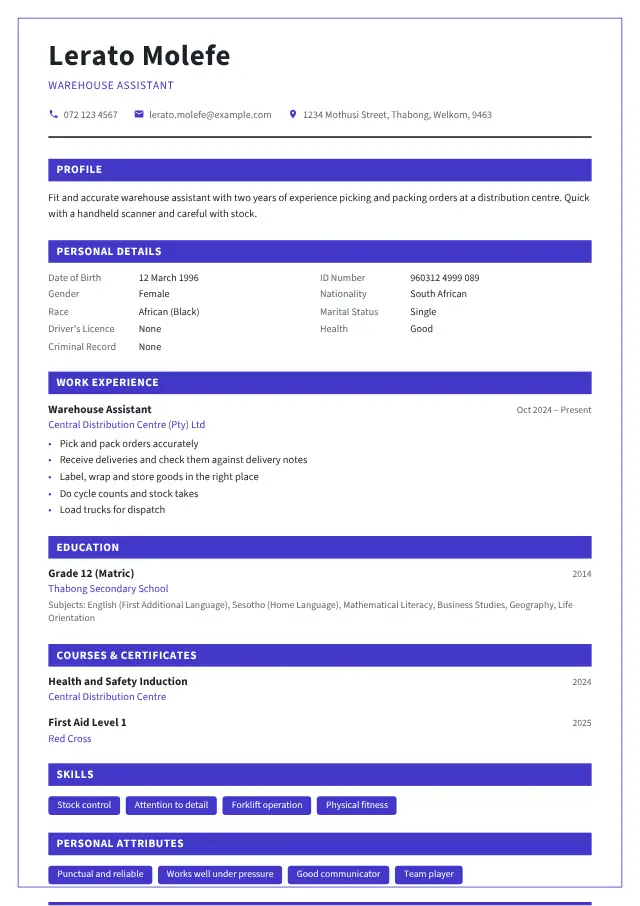

Warehouse Assistant or Packer CV example
A Warehouse Assistant or Packer CV for South African employers: what to write, the duties and skills to list, a cover letter, tips and interview questions.
Updated 13 November 2026 · By Tumelo Vincent Tau

1. An example profile
A short profile at the top of your CV says who you are and what work you want. Change it to fit your own experience:
2. Duties to list
Under each job like this in your work experience, list three to five of the duties you really did:
- Pick and pack orders accurately
- Receive deliveries and check them against delivery notes
- Label, wrap and store goods in the right place
- Do cycle counts and stock takes
- Load trucks for dispatch
- Keep the warehouse clean and safe
3. Skills and certificates
Skills employers look for in this job:
- Stock control
- Attention to detail
- Forklift operation
- Physical fitness
Also list, if you have them:
- Scanners or warehouse systems you used
- Forklift certificate, if you have one
- Health and safety training
4. Tips for Warehouse Assistant or Packer jobs
- Picking accuracy and speed matter most: mention them if you know your numbers.
- List any machines you can use: handheld scanners, pallet jacks, or a forklift (with your certificate).
- Mention that you follow safety rules, especially for lifting and moving stock.
5. An example cover letter
Send a short cover letter with your CV, naming the post and the reference number from the advert:
Dear Hiring Manager
Re: Application for the post of Warehouse Assistant or Packer
I would like to apply for the post of Warehouse Assistant or Packer, as advertised. Please find my CV attached.
At a distribution centre I picked and packed about 200 orders a shift with a handheld scanner, checked stock against invoices and loaded trucks. My picking accuracy was among the best on my team, and I always follow the safety rules.
I am available for an interview at any time and can be reached on 072 123 4567. Thank you for considering my application.
Yours faithfully
Lerato Molefe
More help: how to write a cover letter, a CV with no work experience and job interview tips.
6. Interview questions for Warehouse Assistant or Packer jobs
If your CV gets you an interview, expect questions like these. Think about your answers before the day:
- How do you make sure you pick and pack the right items?
- Check the code and quantity against the picking slip, and check again before sealing.
- How do you lift heavy things safely?
- Bend your knees, keep your back straight, ask for help or use a trolley or pallet jack.
- Have you worked with scanners or a stock system?
- Name them, or say you have used paper slips and learn systems quickly.